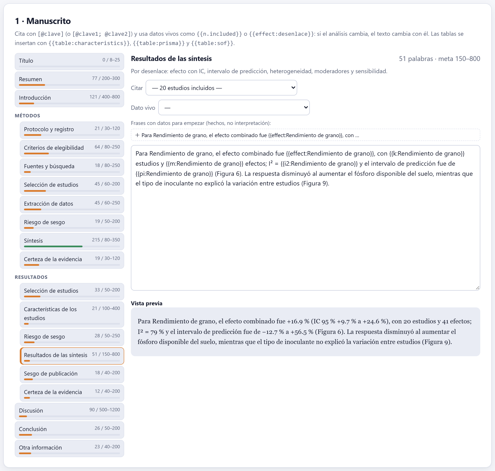
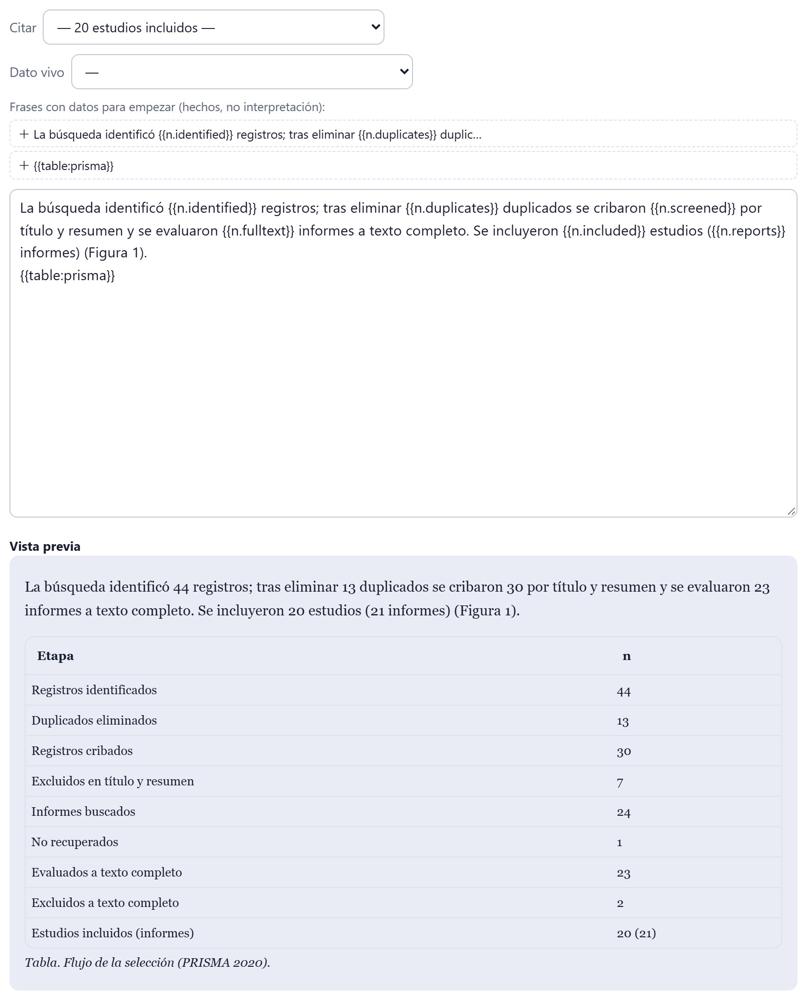
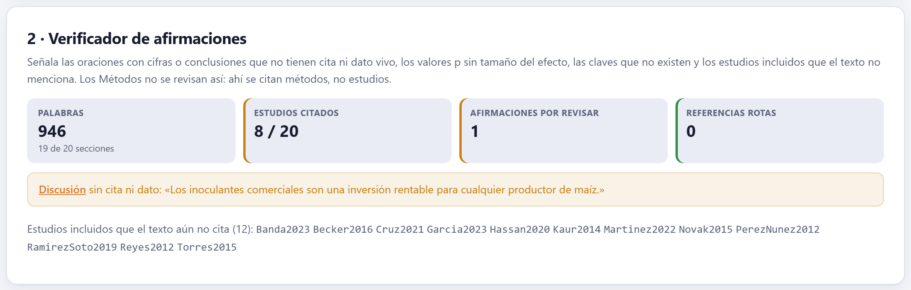
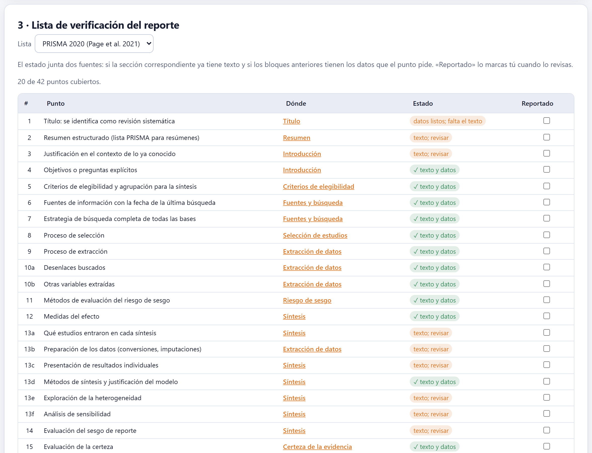
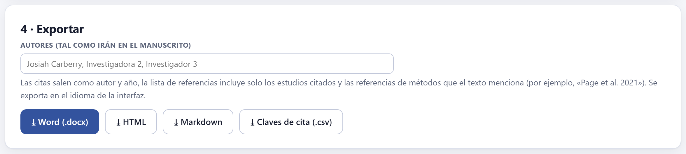

El manuscrito se escribe aquí, sección por sección, sobre el esqueleto del tipo de revisión. La app no redacta: dice qué necesita cada sección, ofrece las citas de los estudios incluidos y los números del análisis como datos vivos que siguen al proyecto, revisa que cada afirmación tenga respaldo, lleva la lista de verificación de la guía de reporte y exporta a Word, HTML o Markdown con las citas y las referencias resueltas.

Las secciones dependen del tipo de revisión. Una sistemática y un meta-análisis siguen el formato de introducción, métodos, resultados y discusión con las subsecciones que pide PRISMA 2020 —el meta-análisis agrega el sesgo de publicación—; la exploratoria cambia la extracción por la caracterización de los datos y no lleva riesgo de sesgo ni GRADE; la narrativa trae temas libres, que se renombran escribiendo en su título y se multiplican con ＋ Otro tema.
Cada sección muestra una guía de lo que debe contener —la de los resultados de la síntesis dice «Por desenlace: efecto con IC, intervalo de predicción, heterogeneidad, moderadores y sensibilidad»— y una meta de palabras orientativa. La barra de la izquierda se pone ámbar mientras la sección está debajo de la meta, verde dentro de ella y roja si la pasa por mucho. El texto se guarda al escribir.
Dos marcas convierten un texto en uno que no se desfasa del análisis:
| Se escribe | Sale como |
|---|---|
[@Cruz2021] | (Cruz & Mendoza 2021), y la ficha completa en la lista de referencias. |
[@Rossi2013; @Oliveira2018] | Varias citas en un solo paréntesis, separadas por punto y coma. |
{{n.included}} | 20: un número del diagrama PRISMA. |
{{effect:Rendimiento de grano}} | +16.9 % (IC 95 % +9.7 % a +24.6 %). |
{{table:characteristics}} | La tabla de características completa. |
No hace falta recordarlas: el menú Citar lista los estudios incluidos con autor, año y título, y el menú Dato vivo lista cada dato con su valor actual; al elegir uno se inserta donde está el cursor. La clave de cada estudio es el apellido del primer autor y el año, con a, b… cuando se repiten; ⤓ Claves de cita (.csv) las descarga. En la vista previa, una clave que no corresponde a ningún estudio o un dato sin valor aparecen resaltados en rojo.
| Datos vivos | Qué dan |
|---|---|
n.identified, n.duplicates, n.screened, n.excludedTA, n.fulltext, n.excludedFT, n.notRetrieved, n.included, n.reports | Los conteos del diagrama de flujo. |
search.sources, search.date | Las fuentes buscadas y la fecha de la última búsqueda (Bloque 3). |
reg, funding, coi | El registro, el financiamiento y los conflictos de interés (Bloque 2). |
effect, k, m, i2, pi, p, grade seguidos de :desenlace | El efecto con su IC, los estudios, los efectos, I², el intervalo de predicción, el valor p y la certeza GRADE de ese desenlace. |
table:characteristics, table:prisma, table:sof | Las tablas de características, del flujo PRISMA y del resumen de hallazgos. |
Una revisión se reanaliza muchas veces: se agrega un estudio tardío, se corrige un dato, un árbitro pide otro modelo. Cada número copiado a mano es una oportunidad de que el resumen diga una cosa y la tabla otra. Con los datos vivos, el texto toma sus números del mismo cálculo que las figuras y las tablas, y todo cambia a la vez.

En las secciones que reportan hechos, la app ofrece frases con datos para empezar: el flujo de la selección, el efecto de cada desenlace, la certeza, las fuentes y el registro; y en la síntesis de los métodos, el párrafo del Bloque 8. Un clic las inserta. Son hechos, no interpretación: dicen qué se encontró, nunca qué significa. La introducción, la discusión y la conclusión no tienen frases sugeridas.
ReviewPro no genera la interpretación. Qué significa un efecto de +16.9 % con un intervalo de predicción que incluye pérdidas, cómo se compara con la literatura previa y qué debe hacer un productor son juicios del autor. Las frases sugeridas solo ahorran el trabajo de copiar números.

El verificador lee cada oración de la introducción, los resultados, la discusión y la conclusión, y señala:
Los años no cuentan como cifras, y los métodos no se revisan así: ahí se citan métodos, no estudios. Un clic en el nombre de la sección lleva a ella. El verificador es deliberadamente estricto: una oración señalada puede estar bien —una generalización del propio autor, por ejemplo—, pero conviene leerla de nuevo.

La lista que corresponde al tipo aparece sola, y se puede cambiar: PRISMA 2020 (Page et al. 2021) para sistemáticas y meta-análisis, con sus 27 puntos (42 con incisos); PRISMA-ScR (Tricco et al. 2018), con 22, para exploratorias; y SANRA (Baethge et al. 2019), con 6, para narrativas. Cada punto dice qué pide y en qué sección va —un clic lleva a ella— y combina dos comprobaciones:
| Estado | Qué significa |
|---|---|
| ✓ texto y datos | La sección tiene texto y los bloques tienen los datos que el punto pide (por ejemplo, la fecha de búsqueda para el punto 6). |
| datos listos; falta el texto | El dato existe en el proyecto, pero la sección no lo cuenta todavía. |
| texto; revisar | Hay texto, pero el punto no se puede comprobar con datos o los datos faltan: revísalo a mano. |
| falta | Ni texto ni datos. |
| ✓ marcado | Lo marcaste como reportado en la casilla de la derecha, después de revisarlo. |
En SANRA, cada punto se califica de 0 a 2, y la app suma el puntaje sobre 12. Lo asignas tú, o mejor un colega que lea el borrador.
La mayoría de las revistas pide la lista de verificación de PRISMA llena, con la página donde se reporta cada punto. La columna de la app dice en qué sección; las páginas solo existen en el documento final.

Los autores se escriben como irán en el manuscrito (si se deja vacío, se usan los del protocolo). Tres formatos:
En los tres, las citas salen como autor y año, los datos vivos como sus valores y las tablas completas. La lista de referencias incluye solo los estudios citados y, además, las referencias de los métodos que el texto menciona por autor y año —«Page et al. 2021», «Konstantopoulos 2011», «Duval y Tweedie 2000»…—: la app reconoce las obras de los métodos que implementa y agrega su ficha. Se exporta en el idioma de la interfaz.
En el editor, bajo la vista previa, los mismos avisos del verificador para la sección abierta: afirmaciones sin cita ni dato vivo, valores p sin efecto, claves inexistentes y datos sin valor. Un dato del menú aparece como (sin datos) cuando su bloque todavía no lo calcula.